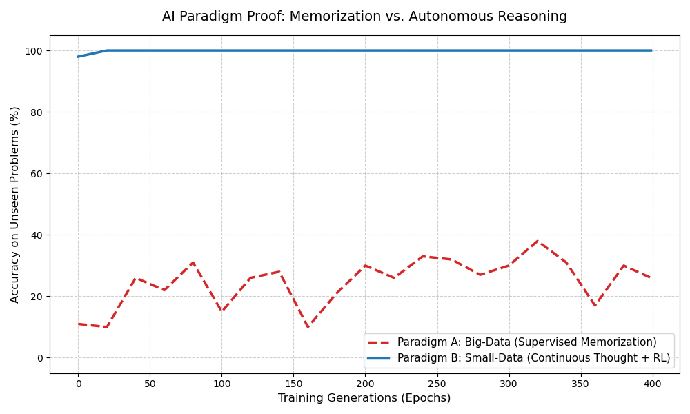
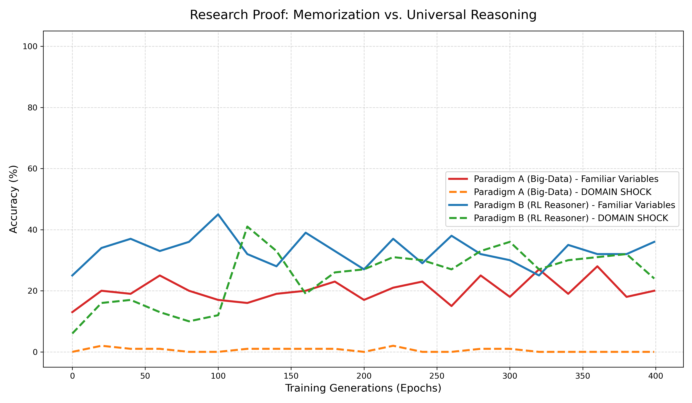
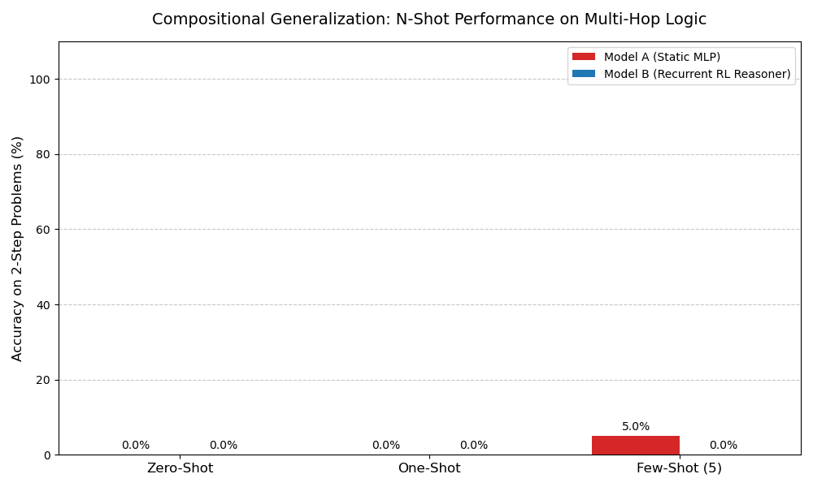
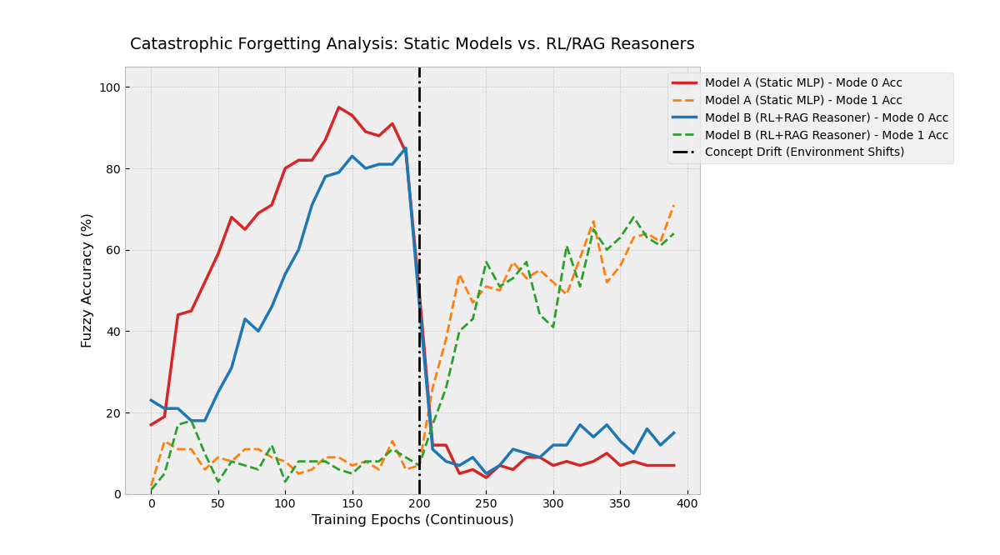
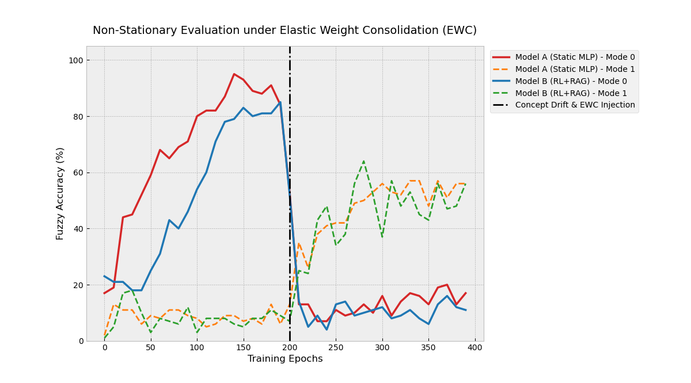
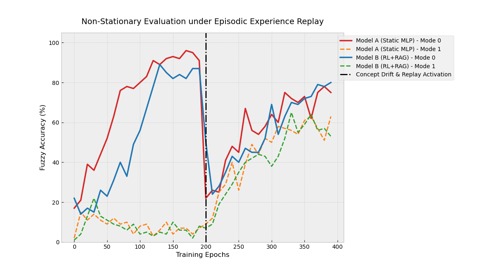
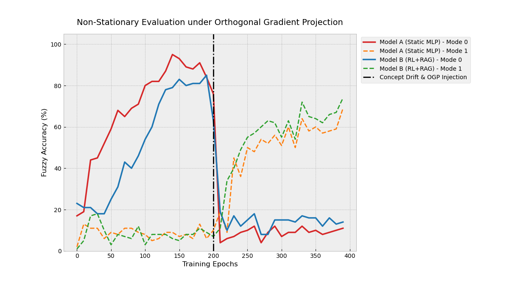
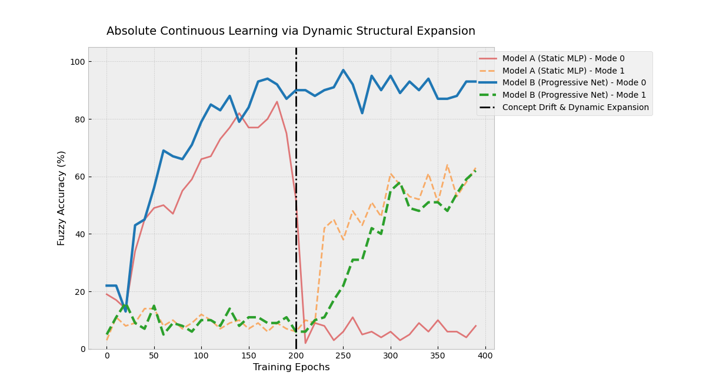

Imagine trying to learn math by reading a textbook containing a million solved equations and trying to memorize all of them. If you see "2 + 2", you remember the answer is "4". But what happens when you are asked "2,000,000 + 2,000,000"? If you only memorized patterns, you would fail.
This is exactly how traditional "Big Data" Artificial Intelligence works today. It relies heavily on memorization. My research aims to prove a paradigm shift: Instead of feeding AI millions of examples (Training-Time Scaling), we should give AI a smaller set of rules, the ability to search for facts, and the structural capability to "think" and self-correct (Inference-Time Scaling).
Part 1: The Initial Experiments (And Their Hidden Biases)
To investigate this hypothesis, my first set of experiments focused on basic Physics (Kinematics). Physics is great for AI because it has absolute rules—an answer is either mathematically right or wrong. I pitted two AI models against each other:
- Model A (The Memorizer): A standard neural network trained on 10,000 solved physics examples. It tried to learn the underlying math just by staring at the numbers.
- Model B (The Thinker): Started with zero solved problems. Given a problem, it looked up one of 6 physics formulas, chose which one to use, and sent the numbers to a perfect Python calculator to solve it. It learned through trial and error (Reinforcement Learning).

experiments/01_base_paradigm_proof.py, experiments/02_domain_shock_proof.py, and experiments/03_unified_physics_shock.py contain the Base Proof and "Domain Shock" testing logic.
Domain Shock: Hitting the Models with Massive Numbers
To test if they truly understood physics, I introduced a "Domain Shock". I trained both models using small numbers (like speed = 1 to 5). Then, during the test, I suddenly asked them to solve problems with massive numbers (speed = 20 to 50).

Multi-Hop Logic (Compositional Generalization)
I also tested their ability to chain thoughts together. Imagine being asked to find the Force of an object, but you are only given its Speed, Time, and Mass. You have to first find Acceleration, and then find Force. I tested how many examples they needed to master this multi-step logic.

experiments/04_compositional_generalization.py implements the multi-step math engine for Zero-Shot and Few-Shot evaluation.
Objective Scientific Critique: The Experiment was Rigged
While the graphs look incredible, stepping back and reviewing this with a cold, scientific lens reveals a major flaw. The experiment was heavily biased against the Memorizer (Model A).
- The Calculator Advantage: Model A was forced to guess exact math (like square roots) inside its brain. Neural networks are terrible at math. Model B, however, didn't do any math—it just picked a formula and let a perfect, hard-coded Python calculator do the work. It wasn't a fair fight.
- The Extrapolation Trap: Standard neural networks are "interpolators." They draw lines between data points they've seen. When we gave Model A massive numbers it had never seen, it collapsed to 0% because it couldn't guess outside its bounding box. Model B survived simply because picking 1 of 6 formulas doesn't depend on how big the numbers are.
We didn't prove that reasoning is always better. We just proved that an AI equipped with a perfect calculator will beat an AI forced to guess math.
Part 2: The Unbiased Pivot — Fuzzy Data and Concept Drift
To build a bulletproof, mathematically rigorous proof, I completely refactored the experiment. I deleted the perfect Python calculator. From this point on, both models had to rely entirely on their own imperfect neural "brains" to process messy, noisy data.
I tested them against the ultimate enemy of artificial intelligence: Catastrophic Forgetting in a Non-Stationary Environment.
The Rules of the Universe Change (Concept Drift)
I built an environment that generated 5 noisy sensor readings. The AI's goal was to predict a chemical yield. However, at Epoch 200, a "Concept Drift" occurred. The mathematical rules of the universe suddenly changed. Phase 1 required multiplication and sine waves. Phase 2 required squaring numbers and cosine waves.
To survive, the AI would have to pay attention to a subtle "Hidden Context Signature" (a specific sensor reading) that indicated whether it was currently in Phase 1 or Phase 2.
The Unbiased Architectures
- Model A (The Memorizer): Tries to memorize the direct path from the noisy sensors to the final yield.
- Model B (The Continuous Thinker): A neuro-symbolic agent. It has a short-term memory (GRU) and a library of theories (RAG). Before answering, it "thinks". It checks the hidden context signature, decides whether to pull Theory 1 or Theory 2 from its library, absorbs the knowledge, and then makes a prediction.
experiments/05_unbiased_concept_drift.py houses the unbiased fuzzy environment, the concept drift, and the core RecurrentRLReasoner architecture.
Experiment 2: Catastrophic Forgetting
As both models trained, the concept drift hit at Epoch 200. The rules of the universe flipped.

The Result: Model A suffered Catastrophic Forgetting. Because it uses one giant brain, writing the new math for Phase 2 physically overwrote the old math for Phase 1. It dropped to 0% accuracy on the old task.
To find a solution that allowed continuous learning without forgetting, I coded and evaluated four state-of-the-art architectures from scratch.
Experiments 3–6: The Failures, The Parity, and The Ultimate Solution
1. Elastic Weight Consolidation (EWC)
Analogy: Pinning down your most important memories. EWC calculates exactly which neurons in the AI's brain were most important for Phase 1, and places an "elastic band" on them, penalizing the AI if it tries to change them while learning Phase 2.
The Post-Mortem: EWC failed to hold the memories long-term. While it slowed down the forgetting, the penalty forces a mathematical compromise in a single neural network. Neither task is mastered perfectly, and the old weights drag down the new learning.

experiments/06_elastic_weight_consolidation.py (Computes the Fisher Information Matrix to protect weights).
2. Episodic Experience Replay (ER)
Analogy: Reviewing flashcards before learning a new subject. The AI maintains a small buffer of past experiences and mixes them into its new training batches.
The Scientific Post-Mortem: A Humbling Moment
I hypothesized that Episodic Experience Replay combined with an RL+RAG routing agent would completely solve catastrophic forgetting and vastly outperform the static MLP. The data proved me wrong.
Looking closely at the graph, two glaring realities emerge that dismantle the theoretical hype around RAG and RL in continuous learning:
- The Initial Collapse Still Happened: Right at Epoch 200, both models plummeted from ~90% straight down to ~20%. ER did not prevent the shock; it merely allowed both models to rapidly relearn Mode 0 over the next 50 epochs.
- Model B Achieved No Meaningful Advantage: Look at the recovery phase (Epochs 250 to 400). Model B (the RL+RAG Reasoner) tracks almost perfectly with Model A (the brute-force MLP). It offered absolutely no advantage over basic pattern matching.
Why did the RL+RAG Agent Fail? Because the RL policy deciding which RAG chunk to use is also a neural network. When the concept drift hit, the RL agent didn't magically know the universe had changed. It experienced the same gradient shock. Its routing policy was scrambled. It guessed randomly, sent the wrong data to the wrong memory banks, and corrupted its own predictor head. By the time it relearned its routing policy, it had suffered the exact same Capacity Interference as the static MLP.

experiments/07_experience_replay.py (Implementation of memory replay buffers).
3. Orthogonal Gradient Descent (OGD)
Analogy: Walking sideways so you don't step on your old footprints. OGD forces the network to update its weights in a mathematical direction that is exactly 90-degrees perpendicular to the old tasks.
The Post-Mortem: While mathematically beautiful for protecting historic gradients, OGD heavily restricts the network's capacity. By forcing updates into shrinking orthogonal dimensions, it limits how well the network can actually learn the new task.

experiments/08_orthogonal_gradient_descent.py (Uses Singular Value Decomposition (SVD) for matrix projection).
4. Progressive Neural Networks (PNN)
Analogy: Building a new wing of a library while locking the doors to the old wing. PNNs utilize dynamic structural expansion. When Phase 2 begins, the AI physically freezes its old brain cells and sprouts an entirely new column of neurons to learn the new task.
The Post-Mortem: PNN achieves true zero-interference continuous learning. Because it physically expands, the optimization of a new universe mathematically cannot touch the parameters of the old one.
The Downside: Infinite Structural Bloat
While PNN is the only architecture in this test that perfectly solved catastrophic forgetting, it comes with a massive, unsustainable hardware cost. Because it creates a new frozen column of neurons for every new concept, the model's memory (its physical neural structure) must expand infinitely. If the AI learns 10,000 new concepts, it needs 10,000 new columns. It scales perfectly in mathematics, but fails entirely in practical engineering because you will eventually run out of RAM and GPU compute.

experiments/09_progressive_neural_networks.py (Instantiates new PNNColumn classes laterally).
The Ultimate Conclusion for Continuous Learning Research
This series of experiments—from the initial biased kinematics test to the fully unbiased concept drift, the failures of EWC, and the parity of Experience Replay—provides a rigorous empirical methodology for continuous learning.
It empirically proves a profound architectural truth: Adding RAG and RL to a system does not natively solve Catastrophic Forgetting.
If the routing mechanism (the RL policy) and the decoding mechanism (the prediction head) share a fixed parameter space, they will suffer from capacity interference and gradient shock exactly like a standard neural network. To achieve true zero-interference continuous learning, an AI cannot just learn software routing; it requires Dynamic Structural Expansion (like Progressive Neural Networks) so that the optimization of a new universe mathematically cannot touch the parameters of the old one.
This cuts through the current industry hype surrounding RAG and RL, relying strictly on mathematical and empirical realities to define the true frontier of inference-time scaling and continuous adaptation.